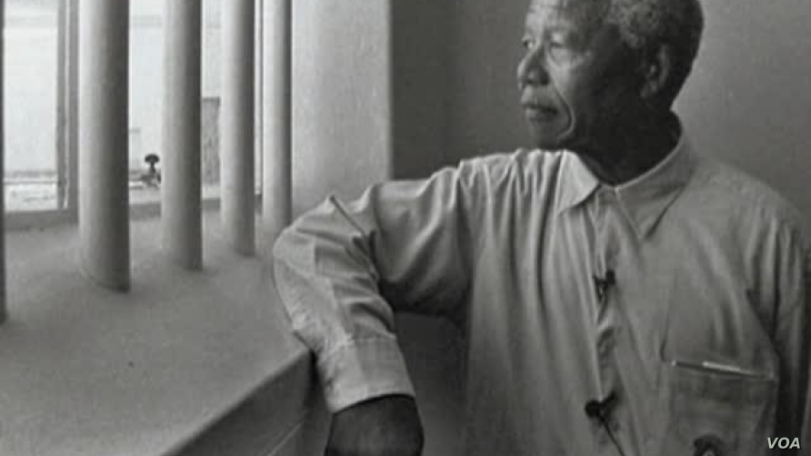

Nelson Mandela (1918 – 2013)
was a South African political activist who spent over 20 years in
prison for his opposition to the apartheid regime.
Here's a time line of Nelson Mandela's life
1918 - Born Rolihlahla Mandela at Mvezo in the Transkei
1925 - Attends primary school near Qunu (receives the name ‘Nelson’ from a teacher)
1934 - Undergoes initiation; Attends Clarkebury Boarding Institute in Engcobo
1937 - Attends Healdtown, the Wesleyan College at Fort Beaufort
1939 - Enrols at the University College of Fort Hare, in Alice
1940 - Expelled
1941 - Escapes an arranged marriage; becomes a mine security officer; starts
articles at the law firm Witkin, Sidelsky & Eidelman
1944 - Co-founds the ANC Youth League (ANCYL); marries Evelyn Ntoko Mase – they
have four children: Thembekile (1945); Makaziwe (1947 – who dies after nine months); Makgatho
(1950); Makaziwe (1954).
1951 - Elected President of the ANCYL.
1952 - Defiance Campaign begins; Arrested and charged for violating the Suppression
of Communism Act; Elected Transvaal ANC President; Convicted with J.S Moroka, Walter Sisulu and 17
others under the Suppression of Communism Act; Sentenced to nine months imprisonment with hard
labour, suspended for two years; Elected first of ANC deputy presidents; Opens South Africa’s first
black law firm with Oliver Tambo.
1956 - Arrested and later joins 155 others on trial for teason.
1958 - Divorces Evelyn Mase; Marries Nomzamo Winnie Madikizela – they have two
daughters: Zenani (1959) and Zindzi (1960).
1960 - A State of Emergency is imposed and he is among thousands detained
1961 - Goes underground; Umkhonto weSizwe (MK) is formed
1962 - Leaves the country for military training and to garner support for the ANC.
Returns to Africa. Arrested and sentenced to 5 years in prison.
1963 - Sent to Robben Island.
1982 - Sent to Pollsmoor Prison
1985 - Rejects, through his daughter, Zindzi, South African President PW Botha's
offer to release him if he renounces violence.
1990 - Released and elected ANC Deputy President.
1993 - Awarded the Nobel Peace Prize with President FW de Klerk
1994 - Votes for the first time in his life and is elected by Parliament as first
president of a democratic South Africa.
1995 - Establishes the Nelson Mandela Children's Fund.
1996 - Divorces Winnie Mandela.
1998 - Marries Graça Machel on his 80th birthday.
2010 - Formally presented with the Fifa World Cup trophy before it embarks on a
tour of South Africa.
2013 - Passes away at home in Johannesburg.
“What counts in life is not the mere fact that we have lived. It is what difference we have made to
the lives of others that will determine the significance of the life we lead.”